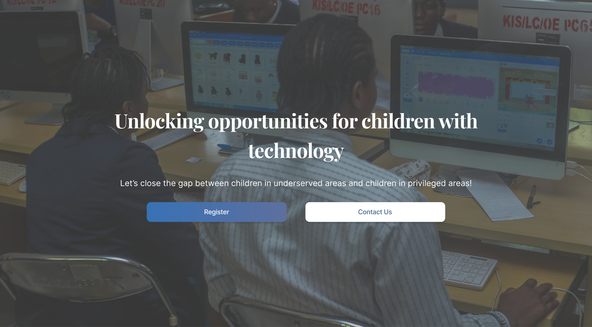
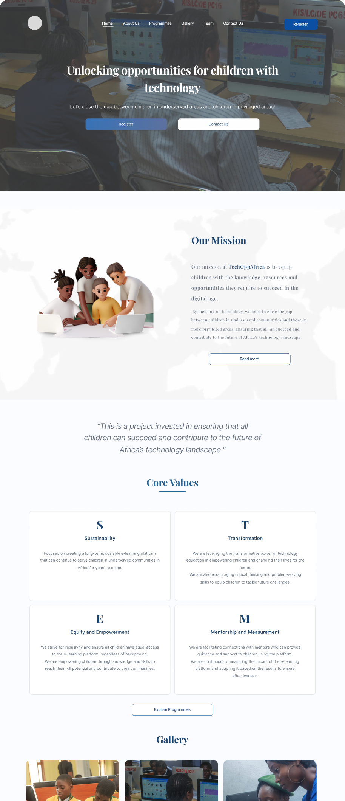
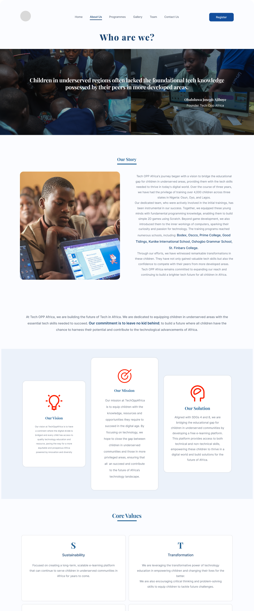
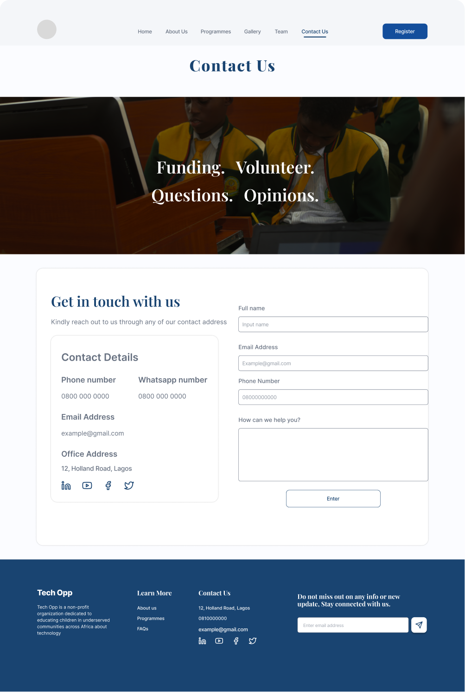
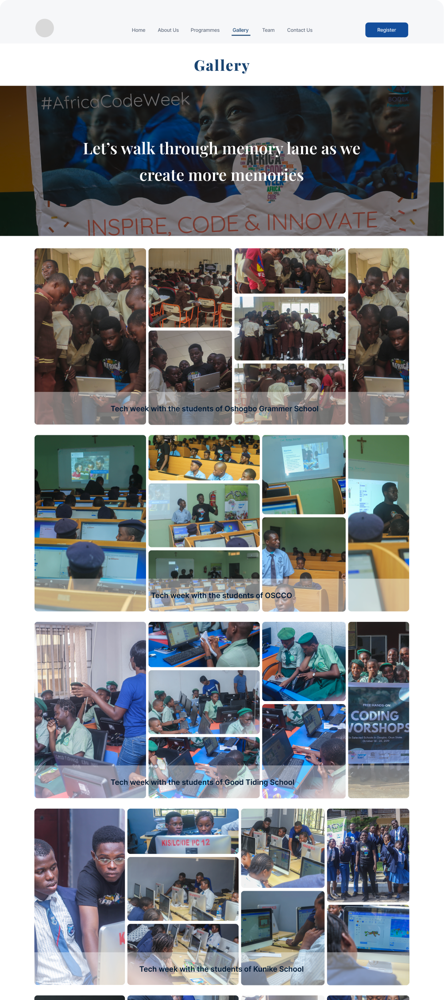
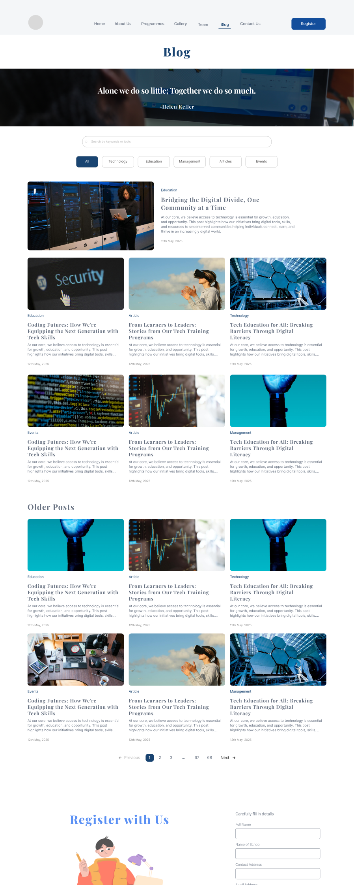
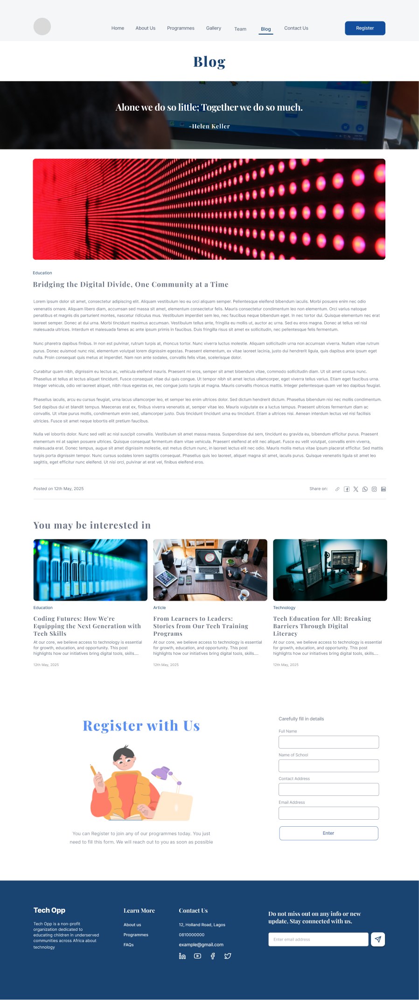

Case Study
Tech Opp Africa
Tech Opp is a non-profit organization dedicated to connecting children to create tech opportunities across Africa.

Overview
Tech Opp is a non-profit platform designed to bridge the digital divide by increasing access to information systems and communities in technology. The goal? To create an engaging, accessible, and informative platform that empowers young learners and those wanting to develop their tech skills.
250
NGO Partners
7
Regions
1 week
Timeline
Problem Statement
Access to tech education is still a luxury for many young people, especially in Africa. Existing solutions are often too complex, inaccessible, or poorly designed — which means many users in the key target demographic are not included and lose a unique opportunity to develop skills in a critical period of their lives.
Goal
- Understanding about user needs and providing solutions that meet those needs.
- Design considerations that prioritize accessibility and inclusivity for young learners.
- A design solution that effectively addresses the problem given the context and constraints.
Typography and Color
#194471
Primary Color
#483740
Text Color
Primary Typeface
Playfair Display
Aa Bb Cc Dd Ee Ff Gg
The quick brown fox jumps over the lazy dog.
Secondary Typeface
Semibold
Inter / 600
The quick brown fox jumps over the lazy dog.


Design Process
A systematic approach to creating user-centered solutions
Research & Discovery
Ideation & Wireframing
Visual Design
Testing & Iterations
Typography & Visual Tone
Consistency in typefaces creates a cohesive brand identity
Playfair Display
Playfair Display
ABCDEFGHIJKLMNOPQRSTUVWXYZ
abcdefghijklmnopqrstuvwxyz
0123456789 !@#$%^&*()
Inter
Inter
ABCDEFGHIJKLMNOPQRSTUVWXYZ
abcdefghijklmnopqrstuvwxyz
0123456789 !@#$%^&*()



